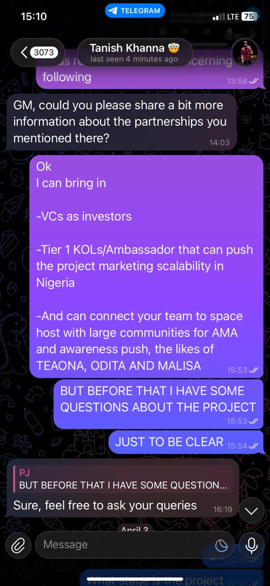

Business Developer
Web3 & Crypto Ecosystem Identified, pitched, and secured strategic partnerships with Venture Capitalists (VCs) to streamline project fundraising efforts. Mapped market scalability regions (with a focus on high-growth areas like Nigeria) to align project goals with local ecosystem opportunities. Connected internal product teams with influential Space Hosts and community leaders to expand organic project reach.
